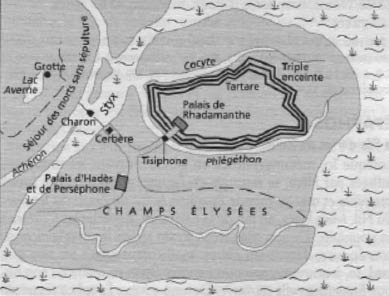

Gerçekten de tanrıların dayatması yüzünden sevgilisi güzel Alissa'dan ayrılıp İtalya'ya doğru yelkenlerini açan Ayneyas; Troya'dan ayrılırken Troyalı bilici prens Helenos'un öğütlerini hiç unutmadı: "İtalya'ya varınca Sibilla denen kadını bul," demişti ona. "Çok akıllı bir kadındır. O sana yol yordam gösterir." O yüzden Ayneyas, İtalya'ya ayak basar basmaz bilici kadın Sibilla'yı buldu hemen. O da; "Geleceğini öğrenebilmen için yeraltındaki Ölüler Ülkesi Hades'e inmelisin. Orada ölen baban Anhises'le konuşmalısın. Hem hasret giderirsin, hem de bundan böyle ne yapman gerektiği konusunda ondan bilgi edinirsin," dedi... Bu sözlerin ardından; "İstersen ben de seninle birlikte yeraltı dünyasına inebilirim," diye konuşmasını sürdürdü... Ne var ki yeraltındaki Ölüler Ülkesi'ne inebilmek için altın bir dal bulması gerekiyordu Ayneyas'ın. Neyse ki yanına aldığı bir arkadaşıyla fazla yorulmadan gerekli altın ağacı buldu ve ondan küçük bir dal koparıp doğruca Sibilla'nın yanına döndü...
Daha önceleri Herakles, Orfeus, Psike ve Odisseus gibi sayılı birkaç kahraman, Hades denen Ölüler Ülkesi'ne canlı olarak inip ve gene canlı olarak dünyaya dönmeyi başarabilmişlerdi. Bu kez de Ayneyas, Sibilla'nın kılavuzluğuyla oraya indi, iner inmez de eli ayağı birbirine dolaşmaya başladı!.. Bu yeni ülkede, korkular ve karanlıklar içinde Sibilla'yla birlikte epeyce yol aldıktan sonra Aheron nehriyle Stiks (Styks) Irmağı'nın birleştiği yere geldiler... Buradan karşıya, Hades denen Ölüler Ülkesi'ne geçmek için Haron (Charon) adlı bir bekçinin kayığına binmek gerekiyordu. O yüzden bu dönüşü olmayan ülkeye göç eden dünyalılar, bir an önce sandalı alıp karşıya geçirmesi için Haron'a yalvar yakar oluyorlardı! Ama kayıkçı Haron da öyle her yalvaranı kayığına almıyordu! Kayığına almadıkları da yeryüzünde geleneklere uygun olarak gömülmemiş olanlardı... Örneğin gözleri içine altın para konmamış olanlar onun sandalına hemen binemiyordu; tam yüz yıl Haron'a yalvarıp yakarmaları, daha bir sürü çile çekmeleri gerekiyordu!
Hades, tanrıça Persefone'yi Ölüler Ülkesi'ne kaçırırken

Yeraltı Ölüler Ülkesi'nin krokisi
Ayneyas'la ona yoldaşlık eden Sibilla da tam sandala atlayacakları sırada sandalcı Haron, onları durdurdu hemen: "Ben yalnızca ölüleri karşıya geçiririm!" diye diklendi. Bunun üzerine Sibilla elindeki altın dalı gösterdi Haron'a. Haron da artık sesini çıkarmadı; sandalına aldı ikisini de. Ölüler Ülkesi'nin kapısında nöbet tutan üç başlı Kerberos ya da Cerbère (Serber) denen azılı köpeğin yanına geldiklerinde Sibilla, hemen yiyecek bir şeyler verdi ona. Sonra da usul usul sırtını okşadı. Canavar köpek, artık Ayneyas'a ve Sibilla'ya kuyruğunu sallaya sallaya içeri buyur etti. Onlar da kapıdan girip yeraltı Ölüler Dünyası'nın geniş meydanlarında özgürce yürümeye başladılar... Sonra "Yas Tarlaları"na ulaştılar. Yeryüzünde yaşadıkları umarsız aşklar yüzünden canlarına kıymış bahtsız sevdalılar oturuyordu orada. Ayneyas da orada, kendisine âşık olan ama ayrılmak zorunda kaldığı için odun yığınları üstünde kendini yakan sevgilisi kraliçe Alissa ile karşılaştı. Ayneyas doğruca onun yanına gidip; "Zeus'un buyruğuyla seni terk etmek zorunda kaldım! Beni bağışla, sevgilim!" diye yalvardı uzun uzun... Kraliçe güzel Alissa da, yoğun bir bulut heykeli olarak öylece baktı yüzüne; hiçbir yanıt vermedi... Zıpkın yemişçesine sapsarı bir acı saplandı Ayneyas'ın yüreğine...
Ayneyas'ı babası Anhises'le buluşturmak için kılavuzluk eden tanrı sözcüsü Sibilla; "Bu yolun sonunda başyargıç Radamantis (Rhadamanthis) oturur. Yeryüzünde suç işlemiş olanları yargılar. Sağdaki yol da, dünyada hiç kötülük etmemiş kişilerin yaşadığı Şan Elize (Champs Elisée) kırlarına götürecek bizi. İşte baban Anhises de orada oturur!.." dedi.
Biraz daha yürüdükten sonra birbirleriyle buluşan Anhises'le oğlu Ayneyas, uzun uzun kucaklaştılar. Sonra Anhises oğluna Unutuluş Irmağı'nın sularından içirdi. "İleride çok büyük bir kent kuracaksın oğlum!" dedi ona. "Bu kent zamanla büyük bir ülke olacak. Roma İmparatorluğu'nun kurucusu olacaksın böylece..." Anhises, ileride neler yapması gerektiği konusunda da öğütler verdi oğluna. Artık ayrılma zamanı gelince de; "Üzülme, oğlum!" dedi. "Şimdi ayrılacağız, ama daha sonra, dünyada iyilik etmiş insanların oturduğu bu meydanda gene buluşacağız!"
Ayneyas fazla beklemeden Sibilla ile yeniden yeryüzüne çıktı. Ertesi gün de gemideki yoldaşlarıyla birlikte, yanan Troya'nın yerine, Roma İmparatorluğu'nun çekirdeğini oluşturacak yeni bir kent kurmak üzere, İtalya'ya doğru yelkenlerini açtı...